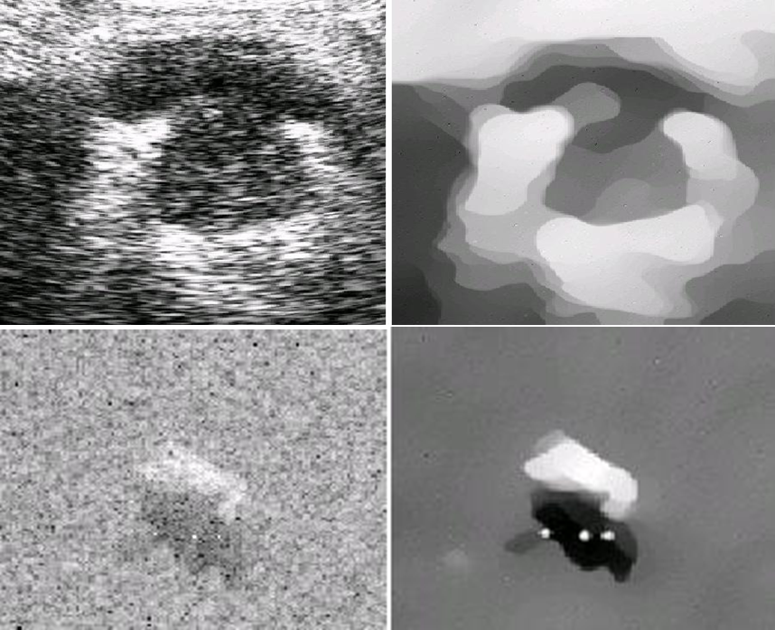
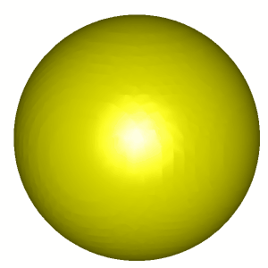
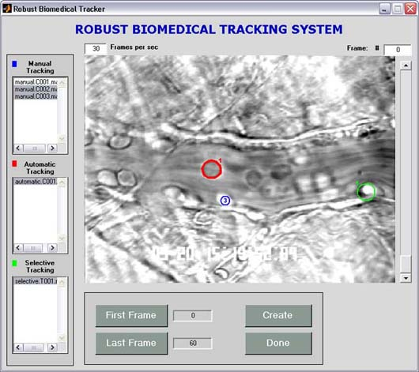

|
Nature: Toolkits for lymphatic analysis
Ageing is a major risk factor for many neurological pathologies, but its mechanisms remain unclear. Unlike other tissues, the parenchyma of the central nervous system (CNS) lacks lymphatic vasculature and waste products are removed partly through a paravascular route. (Re)discovery and characterization of meningeal lymphatic vessels has prompted an assessment of their role in waste clearance from the CNS. A software package developed in-house, Lymph4D
(software available online), was used to process and analyse the images acquired by MRI.
|
|  |
Speckle reducing anisotropic diffusion
A diffusion method tailored to ultrasonic and radar imaging applications for removing speckle noise.
SRAD (
Code is avaliable in toolbelt) and its 3D version,
DD-SRAD
(Code
available on Github) are ready for use by the community. To provide smoothing of such imagery without effacing temporal changes in the scene, we put forth an anisotropic diffusion technique, using a PDE approach. This approach smoothes uniform areas and preserves and enhances edges, such as roads or other features. In order to use this anisotropic diffusion technique, a homogeneous region must first be selected in the image to calculate statistics of the speckle noise.
|
 |
Automated segmentation of neurons
3D confocal microscopy images of the Drosophila neurons are analyzed for brain functional analysis. An adult Drosophila larva has around 20,000 neurons in its nervous system, and this animal has been considered in the biology community as a prototype species for modeling the brain of more sophisticated animals, such as rats or humans. Our research in this field focuses on segmenting the neurons of the fruit fly from a 3-D confocal microscopy image. Over the last few years, we have developed three novel neuron tracers-- Tree2Tree, Tree2Tree-2 and Tubularity Flow Field (TuFF).
|
 |
Region based segmentation using Legendre Level Sets (L2S)
The constant illumination assumption is challenged in applications where the signal intensity is inhomogeneous. encountered frequently in many medical and biological imaging applications like magnetic resonance (MR) imaging, ultrasound, X-ray, confocal and electron microscopy, etc. Current solutions use some form of local processing to tackle intra-region inhomogeneity, which makes such methods susceptible to local minima. We propose a solution which generalizes the traditional Chan-Vese algorithm. In contrast to existing local techniques, we represent the illumination of the regions of interest in a lower dimensional subspace using a set of pre-specified basis functions. This representation enables us to accommodate heterogeneous objects, even in presence of noise. The local intensities are modelled by Legendre polynomials and level sets are used to perform segmentation, hence the name Legendre Level Set (L2S).
|
|  |
Active contours for segmentation
Snakes, or active contours, have been widely used in image processing applications. Typical roadblocks to consistent performance include capture range, noise sensitivity, and poor convergence to concavities. The major drawback of standard external forces is that the force field has an initially zero magnitude in the homogeneous regions of the image. We present a novel external force for active models called vector field convolution (VFC) to address the above problems. This external force is calculated by convolving a vector field with the edge map derived from the image. Active contours that use VFC external force are termed VFC snakes. Instead of being formulated using the standard energy minimization framework, VFC snakes are constructed by way of a force balance condition. The novel static external force has not only a large capture range and ability to capture concavities, but also reduced computational cost, superior robustness to noise and initialization, flexibility of changing the force field. (
Code is avaliable in toolbelt)
|
|  |
Leukocyte detection and tracking
Leukocytes (white blood cells) aid the body in fighting diseases and repairing tissue. In some people leukocytes accumulate in unwanted areas such as healthy tissue and joints which can result in heart disease and arthritis. Studying the behavior of leukocytes assists doctors in designing drugs to treat diseases and conditions such as Crohn's disease, stroke, multiple sclerosis, and atherosclerosis. Algorithms that can automatically detect the positions of leukocytes in a video could be used to initialize a tracking program or to count the number of cells that pass through a given line per unit time.
|